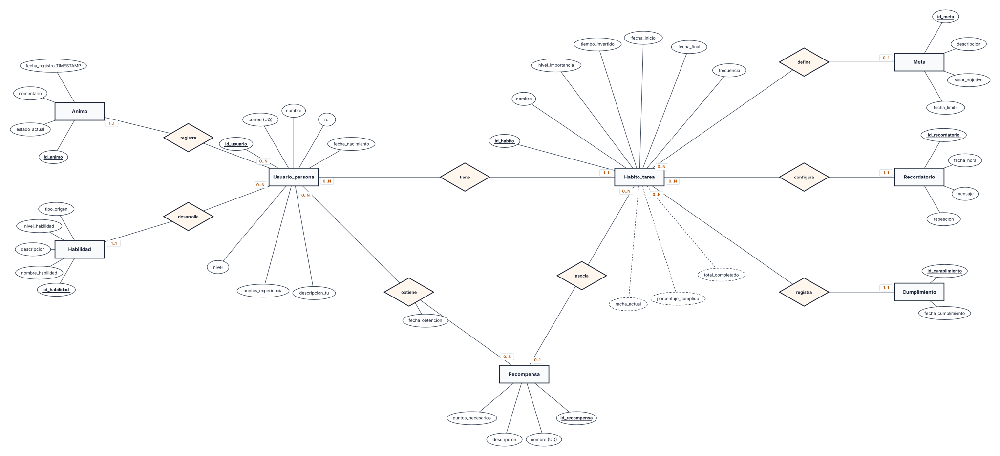
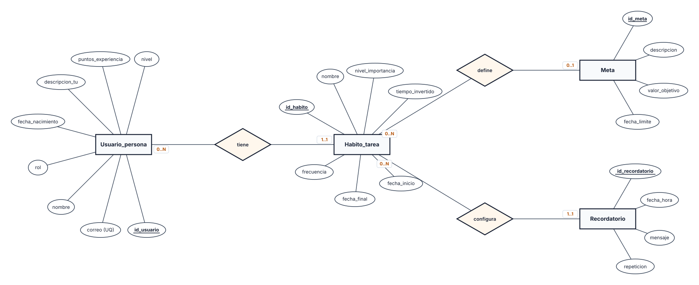
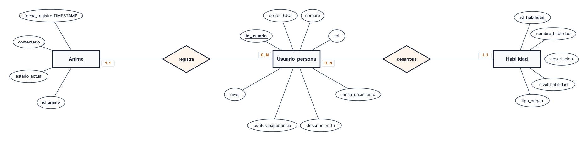
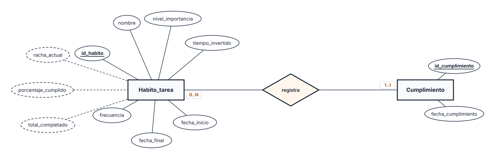
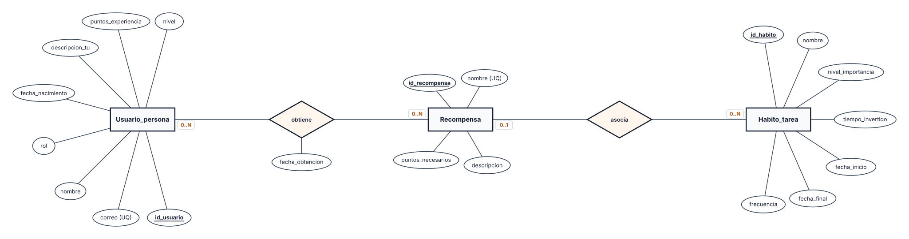

Base de Datos I · Entrega 2
Questly
Sustentación del modelo de datos
Hábitos, metas y progreso personal: qué almacena el esquema vigente, qué cambió y qué reglas sostienen la consistencia.
Recorrido
Cuatro bloques, una sola historia de datos
Bloque 01 / 04
El modelo
Qué guarda Questly, cómo se reparte entre tablas y por qué el progreso no se almacena a mano.
- Nueve tablas base y una vista calculada
- Relaciones con participación mínimo..máximo
- Eventos de cumplimiento como fuente de las métricas
El problema y la solución
La constancia no se pierde por falta de ganas: se pierde por falta de historial.
Notas sueltas, progreso invisible
Agendas y aplicaciones simples no conservan el historial, no muestran el avance a largo plazo y no ofrecen incentivos para sostener un hábito.
Un modelo que registra y devuelve progreso
Hábitos con frecuencia y fechas, eventos de cumplimiento, metas, ánimo, habilidades y recompensas. La gamificación convierte la constancia en algo visible.
Cada tabla representa un hecho del dominio con una responsabilidad concreta; ninguna mezcla el evento con su resumen.
Qué almacena el modelo
Nueve tablas base y una vista calculada
La vista no es una tabla editable: resume los eventos de cumplimiento y se recalcula sola.
Relaciones y cardinalidades
Cada relación, con su participación y su regla
| Relación | Participación | Implementación en el esquema |
|---|---|---|
| Usuario — hábito | Usuario 0..N · hábito 1..1 | usuario_id NOT NULL · CASCADE |
| Usuario — ánimo | Usuario 0..N · ánimo 1..1 | usuario_id NOT NULL · CASCADE |
| Usuario — habilidad | Usuario 0..N · habilidad 1..1 | usuario_id NOT NULL · CASCADE |
| Hábito — recordatorio | Hábito 0..N · recordatorio 1..1 | habito_id NOT NULL · CASCADE |
| Hábito — cumplimiento | Hábito 0..N · cumplimiento 1..1 | habito_id NOT NULL · CASCADE |
| Hábito — meta | Hábito 0..N · meta 0..1 | FK nullable · ON DELETE SET NULL |
| Hábito — recompensa | Hábito 0..N · recompensa 0..1 | FK nullable · ON DELETE SET NULL |
| Usuario — recompensa | N:M · ambos lados 0..N | usuario_recompensa · PK compuesta |
La asociación de recompensas registra una fila por par usuario–recompensa y conserva la fecha de obtención.
Métricas derivadas
El progreso no se escribe: se deriva
cumplimiento
Un registro por hábito y fecha. Es la única fuente de verdad del progreso.
Períodos esperados
Día, semana ISO o mes calendario, desde fecha_inicio hasta hoy o fecha_final.
estadistica_habito
Una fila por hábito con las tres métricas que consume la aplicación.
No existe una tabla estadistica ni columnas de período: insertar métricas a mano volvería a abrir la puerta a datos inconsistentes.
Bloque 02 / 04
Los diagramas
El EER corregido: ocho entidades, todas las relaciones y la notación Chen como lenguaje común.
- Entidades, atributos y rombos de relación
- Cardinalidades mínimo..máximo en cada extremo
- Cuatro subdiagramas para leer el detalle por dominio

EER completo · notación Chen
Ocho entidades y todas sus relaciones
Lo que se corrigió en el EER
Seis cambios con una razón de negocio detrás
fecha_registro
El ánimo dejó de ser un estado único: ahora conserva la fecha y la hora de cada registro.
tipo_origen
Distingue una habilidad predefinida por el sistema de una creada por el usuario.
fecha_obtencion
La relación N:M deja de ser anónima: registra cuándo se ganó cada recompensa.
habito_id opcional
Una meta puede existir sin hábito y sobrevive si el hábito asociado se elimina.
habito_id opcional
Una recompensa puede ser global o estar ligada a un hábito concreto.
Sin Alumno ni Tutor
El rol es un atributo de usuario; no hay atributos propios que justifiquen subtipos.
estadistica_habito tampoco aparece como entidad: es una vista derivada de cumplimiento.
Subdiagrama · Usuarios y hábitos
El dueño, su hábito y lo que cuelga de él

Un usuario tiene 0..N hábitos; cada hábito pertenece a 1..1 usuario.
Recordatorio depende del hábito; la meta puede no existir.
Subdiagrama · Perfil
Ánimo como historial, habilidad con origen

Cada reporte de ánimo es una fila nueva con fecha y hora.
Habilidad: nivel 1..10 y origen sistema / usuario.
Subdiagrama · Seguimiento
Los eventos alimentan las métricas

cumplimiento guarda un hecho por hábito y fecha; la combinación es única.
Total, porcentaje y racha son atributos derivados, no columnas almacenadas.
Subdiagrama · Recompensas
Premios globales y obtenciones con fecha

La recompensa puede ser global: su hábito es opcional (0..1).
obtiene es N:M; en el esquema físico es una tabla puente con PK compuesta.
Bloque 03 / 04
Los cambios
Cada atributo nuevo responde a una necesidad del dominio; cada regla evita un dato inválido o duplicado.
- Seis atributos y cambios con propósito
- Restricciones de dominio en todas las tablas
- CASCADE, SET NULL y RESTRICT con ejemplos
Atributos y cambios
Seis cambios, cada uno con su regla
| Atributo o cambio | Regla | Por qué importa |
|---|---|---|
| animo.fecha_registro | TIMESTAMP NOT NULL DEFAULT CURRENT_TIMESTAMP | Conserva la fecha y la hora de cada registro emocional. |
| habilidad.tipo_origen | CHECK: sistema o usuario; nivel entre 1 y 10 | Distingue habilidades predefinidas de personalizadas. |
| fecha_obtencion | usuario_recompensa: DATE NOT NULL DEFAULT CURRENT_DATE | Conserva cuándo cada usuario obtuvo el premio. |
| fecha_cumplimiento | cumplimiento: UNIQUE (habito_id, fecha_cumplimiento) | Impide duplicar el cumplimiento diario de un hábito. |
| meta.habito_id | Nullable; FK ON DELETE SET NULL | Permite metas independientes y conserva la meta al borrar el hábito. |
| recompensa.habito_id | Nullable; FK ON DELETE SET NULL | Permite recompensas globales o vinculadas a un hábito. |
No son campos aislados: cada uno representa una necesidad del dominio y viene acompañado de una regla que la protege.
Restricciones de dominio
Lo que la base rechaza aunque la aplicación no valide
| Tabla | Condición aplicada |
|---|---|
| usuario_persona | correo único y obligatorio; rol aprendiz/maestro/experto; puntos ≥ 0; nivel ≥ 1. |
| habito_tarea | importancia alta/media/baja; frecuencia diaria/semanal/mensual; tiempo NULL o > 0; fecha_final NULL o ≥ fecha_inicio. |
| meta | valor_objetivo > 0; habito_id opcional. |
| recompensa | nombre único; puntos_necesarios > 0; habito_id opcional. |
| recordatorio | repeticion: única, diaria, semanal o mensual. |
| habilidad | nivel_habilidad entre 1 y 10; tipo_origen sistema o usuario; nombre único por usuario. |
| animo | estado_actual: excelente/bien/normal/triste/estresado; fecha_registro obligatoria. |
CHECK restringe valores; UNIQUE evita duplicados; NOT NULL obliga a capturar el dato; DEFAULT asigna un valor cuando no se especifica.
Integridad y reglas compuestas
La regla vive en la base, no solo en el código
NOT NULL
Obliga a capturar el dato.
DEFAULT
Asigna un valor si no se especifica.
UNIQUE
Evita filas duplicadas.
CHECK
Restringe el dominio de valores.
PRIMARY KEY
Identifica cada fila.
FOREIGN KEY
Impide referencias inexistentes.
Dos reglas compuestas: UNIQUE (habito_id, fecha_cumplimiento) y PRIMARY KEY (usuario_id, recompensa_id).
Un ejemplo para decir en voz alta
-- puntos nunca negativos puntos_experiencia integer NOT NULL DEFAULT 0 CHECK (puntos_experiencia >= 0)
La base rechaza el dato inválido aunque la aplicación no lo haya validado.
- El dominio se declara una vez y aplica a todos.
- La integridad no depende de recordar una regla en el frontend.
Reglas de borrado
Qué se borra, qué sobrevive y qué se bloquea
CASCADE
Se propagaAl borrar un usuario se eliminan sus hábitos, ánimo, habilidades y obtenciones. Los hábitos propagan el borrado a recordatorios y cumplimientos.
usuario → hábito → recordatorio / cumplimiento
SET NULL
Se conservaAl borrar un hábito, las metas y recompensas sobreviven con habito_id = NULL.
meta.habito_id → NULL
recompensa.habito_id → NULL
RESTRICT
Se bloqueaNo se puede borrar una recompensa que ya fue otorgada: el historial de obtenciones queda protegido.
usuario_recompensa.recompensa_id
La política se elige según el significado del dato: lo que no existe sin su padre se elimina; lo que tiene valor propio se conserva; lo que es historial no se destruye.
Bloque 04 / 04
Las operaciones
SQL, migraciones y consultas: distinguir lo que crea el esquema, lo que carga datos y lo que solo es histórico.
- DROP TABLE, DELETE e INSERT no significan lo mismo
- 001 crea el esquema; 002 carga las semillas
- Consultas de métricas y de hábitos activos
Operaciones SQL
Tres operaciones que no significan lo mismo
| Operación | Qué hace | En Questly |
|---|---|---|
| DROP TABLE | Elimina la tabla y todos sus datos. Es destructivo. | Estaba en el script histórico para reiniciar. No está en la migración vigente. |
| DELETE | Elimina filas y puede activar CASCADE. No elimina la definición de la tabla. | Sirve para depurar datos; no se usa para recrear el esquema. |
| INSERT | Agrega filas. | Las semillas de demostración están separadas en 002_datos_semilla.sql. |
Para la exposición
Si aparece DROP TABLE, identifíquenlo como parte del script anterior o como reinicio de una base de pruebas. No forma parte del flujo canónico actual.
Flujo de instalación
La migración vigente tiene dos pasos
001_esquema_questly.sql
Crea las nueve tablas, la vista estadistica_habito y los índices. Se ejecuta una vez sobre una base vacía.
002_datos_semilla.sql
Carga los datos de demostración. No crea estructura ni modifica el esquema.
docs/historico/
SQL de la Entrega 1. Se conserva para trazabilidad, pero no se ejecuta.
Orden canónico: base vacía → 001 → 002 → consultas de negocio.
Consulta de métricas
El resumen se consulta, no se almacena
SELECT u.nombre AS usuario, h.nombre AS habito, e.total_completado, e.porcentaje_cumplido, e.racha_actual FROM estadistica_habito AS e JOIN habito_tarea AS h ON h.id_habito = e.id_habito JOIN usuario_persona AS u ON u.id_usuario = e.usuario_id ORDER BY e.porcentaje_cumplido DESC NULLS LAST;
Qué devuelve
Una fila por hábito con el usuario, el total completado, el porcentaje y la racha actual.
- La vista calcula los períodos según la frecuencia.
- El porcentaje es completados / esperados × 100.
- La racha cuenta períodos consecutivos hasta el último esperado.
Consulta de hábitos activos
Filtrar por vigencia es parte del modelo
SELECT u.nombre, h.nombre, h.frecuencia FROM usuario_persona AS u JOIN habito_tarea AS h ON h.usuario_id = u.id_usuario WHERE h.fecha_final IS NULL OR h.fecha_final >= CURRENT_DATE ORDER BY u.nombre, h.nombre;
Qué resuelve
Lista los hábitos que siguen vigentes: sin fecha final o con una fecha futura.
- Un hábito abierto tiene fecha_final IS NULL.
- Un hábito cerrado solo aparece hasta su fecha límite.
- El JOIN garantiza que todo hábito tiene un dueño.
Preguntas frecuentes
Seis respuestas cortas para cerrar
¿Por qué no existe una tabla Estadistica?
Porque las métricas se calculan en una vista desde los eventos de cumplimiento.
¿Qué pasa con una meta si se borra el hábito?
La meta se conserva y su habito_id pasa a NULL.
¿Qué pasa con un recordatorio?
Se elimina junto con el hábito al que pertenece, por CASCADE.
¿Por qué una recompensa puede no tener hábito?
Puede ser global. Si el hábito asociado se borra, la recompensa se conserva.
¿Qué significa tipo_origen?
Indica si la habilidad viene del sistema o la creó el usuario.
¿Por qué no se puede borrar una recompensa otorgada?
RESTRICT protege el historial de usuario_recompensa.
Cierre
Tres ideas para llevarse
Eventos, no métricas
cumplimiento guarda los hechos; la vista calcula total, porcentaje y racha. Nunca se insertan estadísticas a mano.
Opcionalidad con memoria
Las FK opcionales permiten metas y recompensas globales. Si el hábito se borra, el dato sobrevive con SET NULL.
Integridad en la base
CHECK, UNIQUE, PRIMARY KEY y FOREIGN KEY sostienen el dominio y las referencias, incluso si la aplicación falla.
El resultado: un modelo que separa hechos de cálculos, conserva lo que tiene valor propio y protege el historial.
Questly · Base de Datos I
Gracias.
Preguntas y comentarios